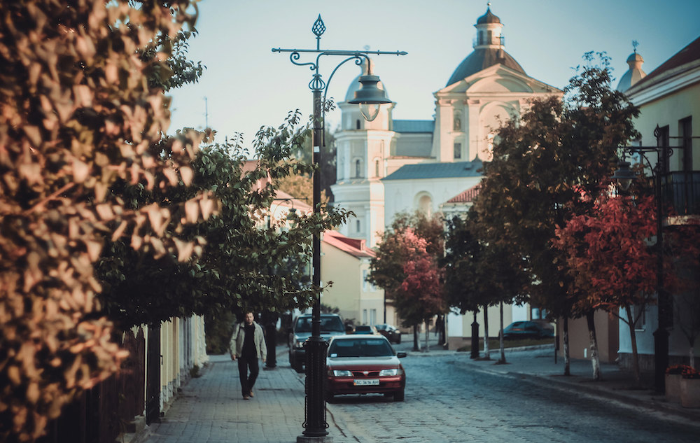

Релігійні традиції Великдень і Різдво святкують з дотриманням давніх українських звичаїв: На Різдво ходять колядники, виконують традиційні пісні та віншують господарів. Великдень супроводжується посвяченням пасок у храмах, а також традиційним обміном крашанками. Поширена традиція водити вертеп — народний театр з біблійним сюжетом. Святкують Івана Купала, особливо в сільській місцевості: пускають вінки на воду, стрибають через багаття. 🎭 Фестивалі та культурні заходи У Луцьку активно підтримуються народні ремесла, пісенна та танцювальна спадщина. Проходять етнофестивалі, наприклад: "Ніч у Луцькому замку" — театралізоване дійство просто неба. Фестиваль національних культур "Поліське коло". Фестиваль сучасного мистецтва "Стрітення". 👰 Сімейні обряди Весілля часто поєднує сучасні елементи з традиційними: співи, благословення батьками, коровай, "викуп" нареченої, український стрій. На похоронах досі співають голосіння — обрядові пісні-оплакування. 🧵 Народні ремесла У Луцьку й Волині шанують традиції вишивки, ткацтва, гончарства. Популярні волинські вишиванки — мають свої особливі орнаменти, часто геометричні або рослинні. 🎄 Святкування Нового року і Маланки В деяких районах області досі відзначають Маланку (Щедрий вечір) — з перевдяганнями, "козою", жартами. Діти ходять щедрувати 13 січня ввечері та посівати 14 січня зранку. 🥟 Кухонні традиції Волинська кухня зберігає багато автентичних страв: бабка картопляна, куліш, млинці, борщ з вушками, верещака (страва з м’ясом і соусом), медовуха. Часто готують домашні вареники, пампушки, кисіль. 🔔 Цікаво: У Луцьку є традиція збиратися біля Замку Любарта на важливі святкування — це історичне серце міста, і тут часто проводяться урочистості та концерти.
